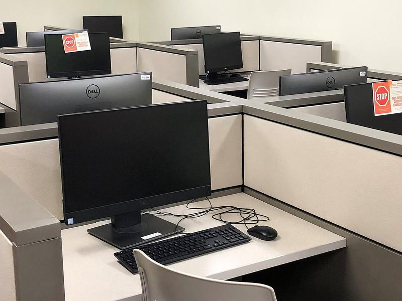
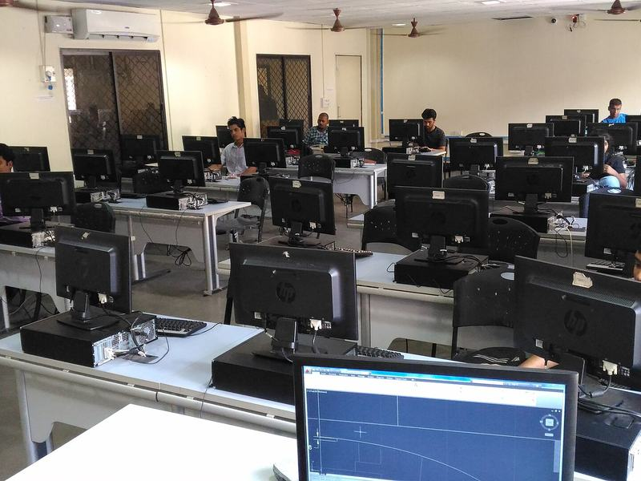
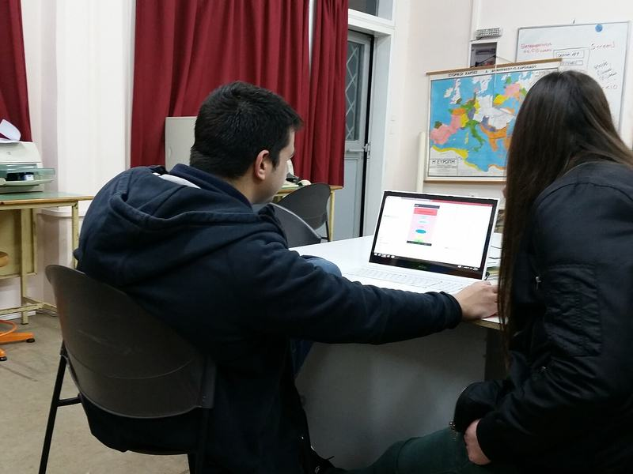
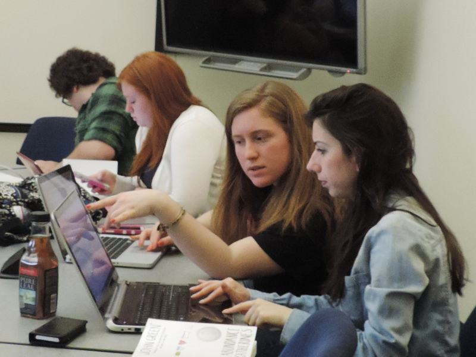

Programs and learning spaces
The department teaches software engineering as a team craft: requirements, design, construction, testing and delivery, practised in labs and project studios.
Sample content. News items, timetable and programme descriptions on this site are illustrative placeholders written for a coursework project. They are not official announcements.
Focus areas
- Requirements and design: turning a user problem into a clear specification and a sound structure.
- Web and application development: building interfaces and services that work on every device.
- Testing and quality: finding defects early and proving that fixes hold.
- Project studio: a team project that carries an idea from first sketch to release.
Labs and teamwork

A computer lab with individual workstations, each with a monitor, keyboard and mouse. 
A large teaching lab with rows of desktop computers and students at work. 
Two students working together at one laptop beside a wall map. 
Students collaborating on laptops around a shared table.
Photographs are illustrative stock images of computer labs and student teamwork, not of this faculty.
Watch: what is software engineering?
Video: What is Software Engineering? | College Majors by Study Hall on YouTube.
Photo credits
- Social Distancing in a Computer Lab.jpg by Mbrickn, Wikimedia Commons, licence CC BY 4.0.
- COMPUTER LAB IMUV.jpg by RitwickSingh, Wikimedia Commons, licence CC BY-SA 4.0.
- Kefalonia Wild Flora project students in computer lab.jpg by Saintfevrier, Wikimedia Commons, licence CC BY-SA 4.0.
- L Nicosia's YAL laptop students jeh.jpg by Jim.henderson, Wikimedia Commons, licence CC0.